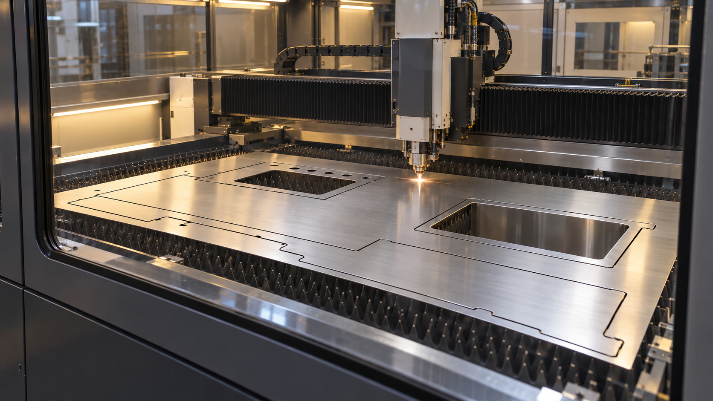
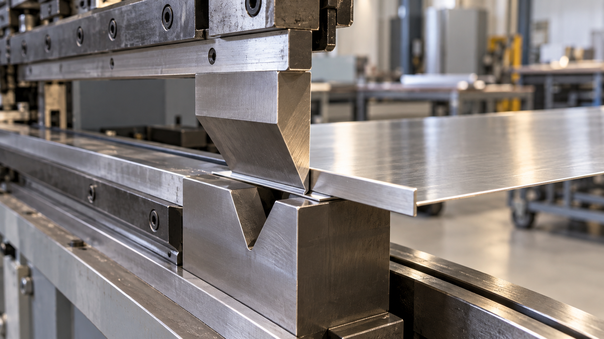
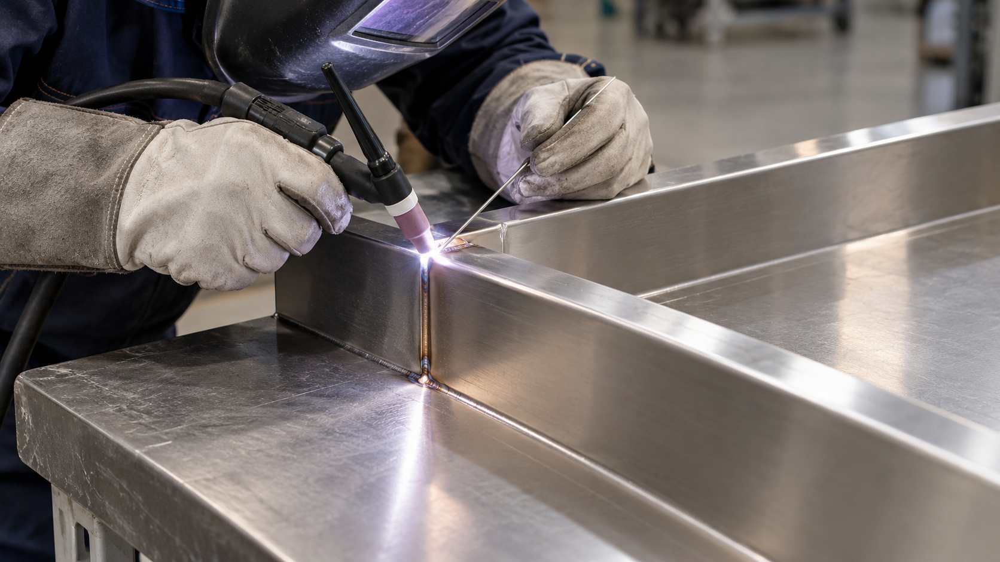
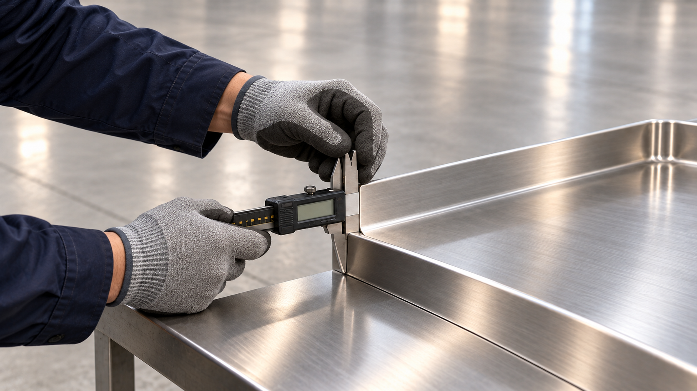
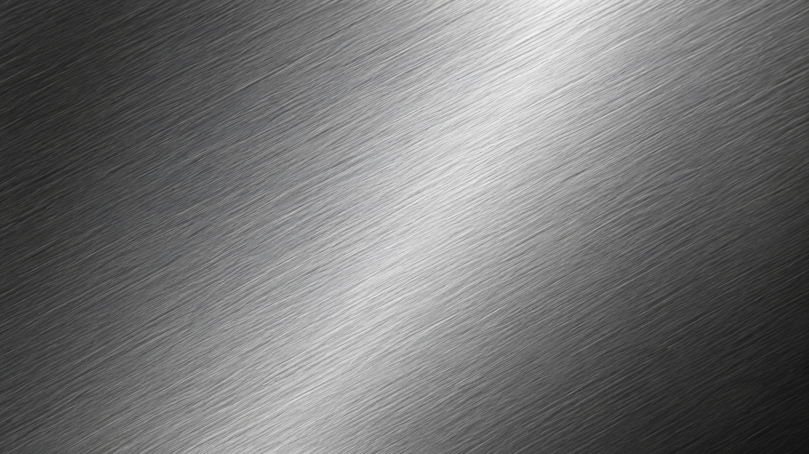
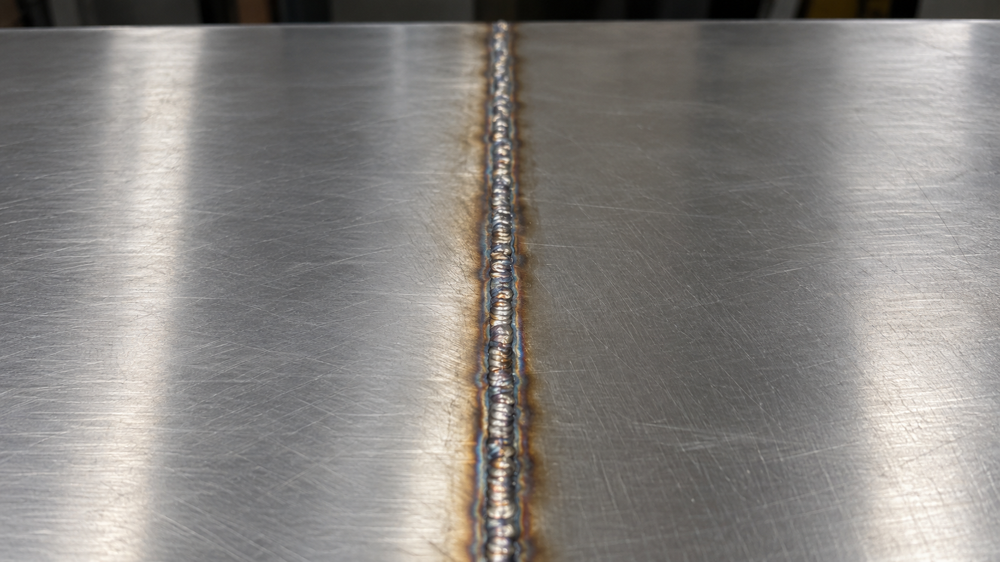

맞춤가구
테이블 · 선반 · 수납가구
공간의 크기와 생활 방식에 맞춰
편리하게 사용할 가구를 설계합니다.
STAINLESS SINK TOP & CUSTOM METAL
차가운 금속에 따뜻한 감성을 담다,
프리미엄 스틸 상판
세균 걱정 없는 완벽한 위생,
가족을 위한 은빛 선택
ABOUT US
은빛주방 씽크는 스테인레스 싱크대 상판과 공간에 맞춘 금속 제품을 만듭니다. 형태와 규격부터 소재, 마감 방식까지 함께 검토하며 제작 방향을 잡습니다.
도면이 완성되지 않아도 괜찮습니다. 간단한 스케치나 참고 사진에서 시작해 필요한 기능과 크기를 하나씩 구체화합니다.
BEFORE YOU ASK
네. 간단한 스케치, 참고 사진, 설치 공간 사진으로 상담을 시작할 수 있습니다. 사용 용도와 대략적인 크기를 함께 알려주세요.
문의 양식에서 ‘상담 필요’를 선택하세요. 설치 공간과 사용 목적을 바탕으로 적합한 사양을 함께 검토합니다.
제품의 구조와 수량, 자재, 설치 지역에 따라 달라집니다. 희망 납기와 설치 조건을 남겨주시면 상담 시 확인합니다.
HOW IT WORKS
공간과 사용 방식에 맞춰 설계하고,
확인된 사양으로 제작을 진행합니다.
용도와 참고 자료를
보내주세요.
공간의 크기와 원하는
구성을 함께 검토합니다.
실측 치수와 작업 동선을
고려해 배치를 조율합니다.
설계안, 제작 사양과
비용을 확인합니다.
확정된 사양에 따라
제작을 진행합니다.
규격과 마감 상태를
점검합니다.
납품 방법과 일정을
협의합니다.
CUSTOM DESIGN
상판의 크기부터 조리 공간, 물받이 턱까지. 필요한 부분을 하나씩 확인하며 설계를 구체화합니다.
사진과 실측 치수를 바탕으로 벽면·창문, 급배수와 전기 위치 등 설치 조건을 검토합니다.
싱크볼·쿡탑 위치와 조리 공간의 폭을 조율하고, 식기세척기 등 사용할 기기의 규격을 반영합니다.
스테인레스 마감과 상판 두께, 물받이 턱의 높이, 타공 위치와 모서리 형태를 함께 확인합니다.
도면과 견적을 확인하고 필요한 부분을 수정합니다. 최종 치수와 사양을 확정한 뒤 제작을 진행합니다.
WHAT WE MAKE
일상의 가구부터 사업장의 설비까지
제작 목적에 맞춰 상담합니다.
테이블 · 선반 · 수납가구
공간의 크기와 생활 방식에 맞춰
편리하게 사용할 가구를 설계합니다.
카운터 · 진열대 · 디스플레이
브랜드의 분위기와 고객 동선을 고려해
매장의 쓰임을 완성합니다.
작업대 · 싱크대 · 보관 설비
작업 환경과 사용 빈도에 맞는
규격과 구조를 함께 검토합니다.
특수 규격 · 개별 디자인
정해진 형태가 없어도 좋습니다.
아이디어를 들려주세요.
DIY & SMALL ORDERS
직접 만드는 즐거움에,
공간에 맞는 금속 디테일을 더하세요.
주방을 직접 꾸미거나 필요한 부품만 바꾸고 싶으신가요? 스테인리스 상판과 선반, 물받이 턱 등 작은 제작 건부터 상담을 시작할 수 있습니다. 스케치와 치수를 바탕으로 제작 범위와 마감 방식을 함께 검토합니다.
DIY용 상판·선반·보강판, 물받이 턱과 맞춤 부품의 절단·절곡·타공을 상담합니다. 기존 제품과 연결할 부분, 모서리 마감과 고정 방식을 함께 확인합니다.
가로·세로·높이(mm), 필요한 수량, 사용 목적을 알려주세요. 타공 위치와 크기, 설치 공간 사진, 원하는 헤어라인·바이브 마감을 함께 보내주시면 사양 검토에 도움이 됩니다.
한 개 또는 소량 제작도 문의해 주세요. 제작 가능 여부와 최소 수량, 비용·납기는 소재와 가공 내용에 따라 확인합니다. 직접 조립할 범위와 배송·설치 필요 여부를 상담 시 함께 정리합니다.
SELECTED WORK
스테인레스 상판의 전체 모습과 디테일을 보여주는 참고 사진입니다.
실제 납품 사례는 추후 등록됩니다.
규격과 마감 방식에 따른 제작 상담
사용 동선을 고려한 싱크대 상판 설계
싱크볼과 배수면, 모서리 마감 상담
STAINLESS CRAFT
확정된 도면에서 마지막 검수까지,
크기와 형태, 표면의 완성도를 확인합니다.




사진은 제작 공정을 설명하기 위한 AI 생성 이미지입니다.
설계 도면에 맞춰 판재를 준비하고, 상판 외곽과 싱크볼·쿡탑의 타공 위치를 정밀하게 가공합니다.
상판 가장자리와 물받이 턱을 설계한 형태로 가공하며, 높이와 각도, 연결 부위를 확인합니다.
구조에 필요한 부분을 접합하고 모서리와 접합부를 다듬습니다. 선택한 헤어라인·바이브 마감을 정리합니다.
최종 치수와 타공 위치, 모서리 상태와 표면 마감을 확인하고, 설치 조건에 맞는지 점검합니다.
THE ART OF FINISHING
빛이 스치는 표면부터 손끝에 닿는 모서리까지.
매일의 주방에 오래 남을 디테일을 만듭니다.

섬세한 직선의 결이 빛을 부드럽게 받아내는 헤어라인 마감.

여러 방향의 미세한 결로 차분한 표정을 만드는 바이브 마감.
BEFORE & AFTER
용접 후의 흔적을 다듬고, 표면의 결을 다시 정리합니다.
사진을 드래그하거나 아래 슬라이더를 움직여 비교해 보세요.

 BEFORE · 연마 전AFTER · 연마 후
BEFORE · 연마 전AFTER · 연마 후마우스·터치·키보드 방향키로 조절할 수 있습니다. 접사와 비교 이미지는 마감 원리를 설명하는 AI 생성 이미지입니다.
두 장의 강판이 만나는 곳까지, 하나의 표면처럼 보이도록 접합부를 다듬습니다.
물의 흐름과 상판의 쓰임을 고려하며, 공간과 설치 조건에 맞는 디테일을 검토합니다.
0mm·0.1mm는 섬세한 마감을 표현하는 설계 콘셉트입니다. 실제 경사·치수·허용오차는 도면과 설치 조건에 따라 협의하며, 표기 수치는 성능 보장값이 아닙니다.
FOUR STEPS TO A REFINED SURFACE
도면에 맞춰 판재와 타공 위치를 정밀하게 가공합니다.
모서리와 연결부를 접합하며 구조와 형태를 확인합니다.
접합부를 평탄하게 다듬고, 단계별로 표면의 결을 정리합니다.
필요한 마감 사양을 적용하고, 치수·모서리·표면을 점검합니다.
QUIET CRAFT
접합부를 다듬고, 표면을 살피고, 치수를 확인하는 과정.
작은 디테일을 놓치지 않는 제작을 지향합니다.
공정 사진을 활용한 무음 모션입니다. 실제 작업실 영상은 아닙니다.